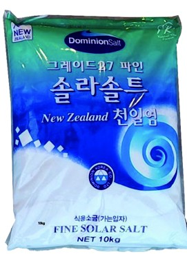
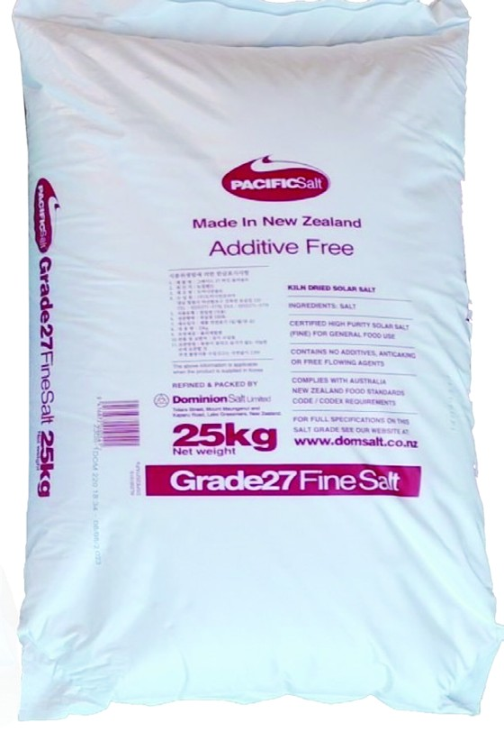
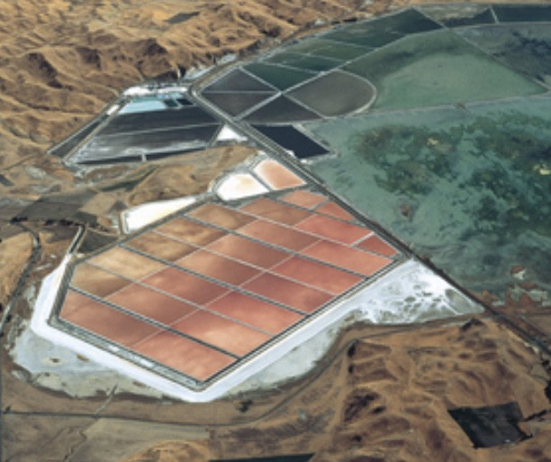

제품 라벨 정보 25kg 포대 라벨 기준
| 항목 | 표기 |
|---|---|
| 품목 | Solar salt (천일염) |
| 등급 | Grade 27 · Fine |
| 원재료 | Salt |
| 제조·포장 | Dominion Salt Limited |
| 용도 | 일반 식품용 |
10kg 포장은 한글로 ‘식용소금(가는입자)’, ‘FINE SOLAR SALT’로 표기된 제품입니다. 최종 표시사항은 실제 공급 제품의 라벨을 기준으로 안내합니다.


제품 자료의 포장 사진입니다. 실제 포장 디자인은 다를 수 있습니다.
세부 제품 표시사항과 수입 관련 정보는 실제 공급 제품의 라벨을 기준으로 안내합니다.
Dominion Salt는 뉴질랜드 Lake Grassmere에서 햇빛과 바람을 이용해 바닷물을 농축하고 소금을 수확합니다.
제조 공정과 세부 사양은 실제 공급 제품의 표시사항과 확인 자료를 기준으로 안내합니다.
Dominion Salt 공식 생산지 안내 ↗
| 항목 | 표기 |
|---|---|
| 품목 | Solar salt (천일염) |
| 등급 | Grade 27 · Fine |
| 원재료 | Salt |
| 제조·포장 | Dominion Salt Limited |
| 용도 | 일반 식품용 |
10kg 포장은 한글로 ‘식용소금(가는입자)’, ‘FINE SOLAR SALT’로 표기된 제품입니다. 최종 표시사항은 실제 공급 제품의 라벨을 기준으로 안내합니다.
본사 사업장 단위의 등록·인증입니다. 10kg·25kg 상품에의 적용 범위와 유효기간은 사본으로 안내하며, 이 페이지의 설명이 상품의 인증 표시를 뜻하지는 않습니다. 시험·분석 자료는 확인되는 대로 안내합니다.
태장은 자회사형 장애인 표준사업장 인증기업(제2026-049호)입니다. 태장이 문의를 접수하고 견적과 공급 조건을 안내합니다.
자회사형 장애인 표준사업장 제도와 관련된 사항은 상담을 통해 안내합니다.
두 제품 모두 Grade 27 Fine Solar Salt로 안내되는 같은 등급의 천일염이며 포장 중량이 다릅니다. 사용량과 보관 환경에 맞춰 규격을 선택해 주세요.
실제 공급 제품의 표시사항과 본사 등록·인증 자료 중 확인된 내용을 상담 시 안내합니다. 인증의 적용 범위는 문서별로 구분해 확인합니다.
이 페이지는 제품 소개와 납품 상담을 위한 페이지입니다. 규격·수량·수령 지역을 알려 주시면 견적과 공급 가능 여부를 상담해 드립니다.
필요한 규격, 예상 수량, 수령 지역을 알려 주시면 담당자가 확인 후 연락드립니다.